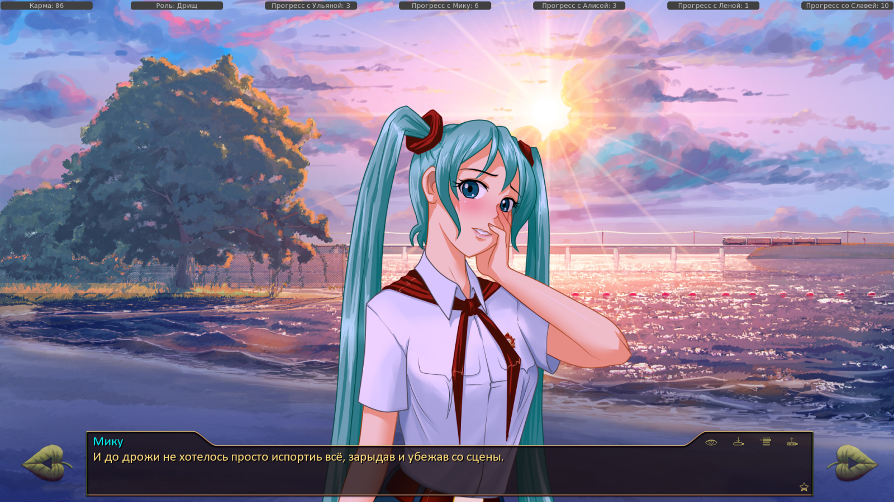
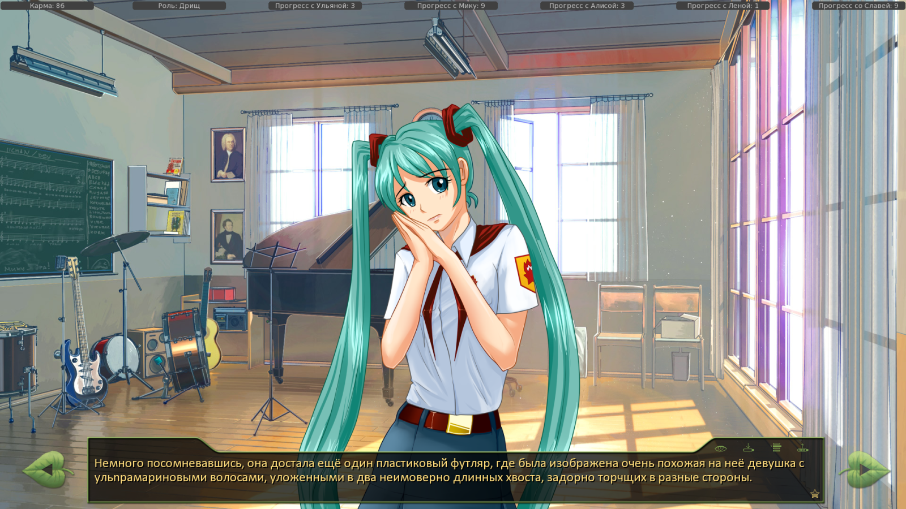

Косяки с логикой.
Страница 3 из 15 •  1, 2, 3, 4 ... 9 ... 15
1, 2, 3, 4 ... 9 ... 15
Re: Косяки с логикой.
автор peregarrett в Вт 23 Сен 2014 - 0:57
Прежде всего, работает у нас вот такой код?
- Код:
$ name = 'Samantha'
$ age = 19
$ withyou = 110
girl "My name is %(name)s, and I am %(age)d years old. I'm with you %(withyou)d%%"

peregarrett- Находка для шпиона

- Сообщения : 3264
Дата регистрации : 2014-09-07
Возраст : 36
Re: Косяки с логикой.
автор peregarrett в Вт 23 Сен 2014 - 1:54
- Код:
$ sam_rand_val = renpy.random.choice(["Камень", "Ножницы", "Бумага"])
$ miku_rand_val = renpy.random.choice(["Бумага", "Ножницы", "Камень"]) #нафига разный порядок? хз, наверно зачем-то нужен
$ order_rand_mi_first = renpy.random.choice([0, 1])
$ winner = 0 # 1 - Семен, -1 - Мику, 0 - ничья
if order_rand_mi_first = 0:
mi "%(miku_rand_val)s!"
$ sam_result = "Ничья!" #выиграл Семен или проиграл
if sam_rand_val == "Камень" and miku_rand_val == "Ножницы" or sam_rand_val == "Ножницы" and miku_rand_val == "Бумага" or sam_rand_val == "Бумага" and miku_rand_val == "Камень":
$ sam_result = "Я выиграл!"
$ winner = 1
elif sam_rand_val == "Ножницы" and miku_rand_val == "Камень" or sam_rand_val == "Камень" and miku_rand_val == "Бумага" or sam_rand_val == "Бумага" and miku_rand_val == "Ножницы":
$ sam_result = "Я проиграл..."
$ winner = -1
me "%(sam_rand_val)s! %(sam_result)s"
else:
me "%(sam_rand_val)s!"
$ mi_result = "Ничья!" #выиграла Мику или проиграла
if sam_rand_val == "Камень" and miku_rand_val == "Ножницы" or sam_rand_val == "Ножницы" and miku_rand_val == "Бумага" or sam_rand_val == "Бумага" and miku_rand_val == "Камень":
$ mi_result = "Не повезло..."
$ winner = 1
elif sam_rand_val == "Ножницы" and miku_rand_val == "Камень" or sam_rand_val == "Камень" and miku_rand_val == "Бумага" or sam_rand_val == "Бумага" and miku_rand_val == "Ножницы":
$ mi_result = "Ура!"
$ winner = -1
mi "%(miku_rand_val)s! %(mi_result)s"
if winner == 1:
....
elif winner = -1:
....
else
....
peregarrett- Находка для шпиона
- Сообщения : 3264
Дата регистрации : 2014-09-07
Возраст : 36
Re: Косяки с логикой.
автор Ingvar в Вт 23 Сен 2014 - 6:25
Ну и пара опечаток
- Спойлер:


Ingvar- Сыч

- Сообщения : 63
Дата регистрации : 2014-09-07
Возраст : 39
Откуда : Санкт-Петербург
Re: Косяки с логикой.
автор 7dl-kun в Вт 23 Сен 2014 - 10:29

7dl-kun- Находка для шпиона
- Сообщения : 3026
Дата регистрации : 2014-09-07
Откуда : здесь столько наркоманов?
Re: Косяки с логикой.
автор 7dl-kun в Вт 23 Сен 2014 - 13:09
Во-первых, тут сначала объявляется победитель, а после уже подставляются значения. Имхо, не комильфо.peregarrett пишет:Набросал кусок кода, попробуй.
- Код:
$ sam_rand_val = renpy.random.choice(["Камень", "Ножницы", "Бумага"])
$ miku_rand_val = renpy.random.choice(["Бумага", "Ножницы", "Камень"]) #нафига разный порядок? хз, наверно зачем-то нужен
$ order_rand_mi_first = renpy.random.choice([0, 1])
$ winner = 0 # 1 - Семен, -1 - Мику, 0 - ничья
if order_rand_mi_first = 0:
mi "%(miku_rand_val)s!"
$ sam_result = "Ничья!" #выиграл Семен или проиграл
if sam_rand_val == "Камень" and miku_rand_val == "Ножницы" or sam_rand_val == "Ножницы" and miku_rand_val == "Бумага" or sam_rand_val == "Бумага" and miku_rand_val == "Камень":
$ sam_result = "Я выиграл!"
$ winner = 1
elif sam_rand_val == "Ножницы" and miku_rand_val == "Камень" or sam_rand_val == "Камень" and miku_rand_val == "Бумага" or sam_rand_val == "Бумага" and miku_rand_val == "Ножницы":
$ sam_result = "Я проиграл..."
$ winner = -1
me "%(sam_rand_val)s! %(sam_result)s"
else:
me "%(sam_rand_val)s!"
$ mi_result = "Ничья!" #выиграла Мику или проиграла
if sam_rand_val == "Камень" and miku_rand_val == "Ножницы" or sam_rand_val == "Ножницы" and miku_rand_val == "Бумага" or sam_rand_val == "Бумага" and miku_rand_val == "Камень":
$ mi_result = "Не повезло..."
$ winner = 1
elif sam_rand_val == "Ножницы" and miku_rand_val == "Камень" or sam_rand_val == "Камень" and miku_rand_val == "Бумага" or sam_rand_val == "Бумага" and miku_rand_val == "Ножницы":
$ mi_result = "Ура!"
$ winner = -1
mi "%(miku_rand_val)s! %(mi_result)s"
if winner == 1:
....
elif winner = -1:
....
else
....
Во-вторых, непонятно куда пойдёт момент сравнения и столкновения символов.
Прикрутить рандомайзер внутрь самой игры к уже существующему не проблема. Но зачем? Ради того, чтобы после пятого кона скучно не стало? Не знаю.
7dl-kun- Находка для шпиона
- Сообщения : 3026
Дата регистрации : 2014-09-07
Откуда : здесь столько наркоманов?
Re: Косяки с логикой.
автор 7dl-kun в Вт 23 Сен 2014 - 15:21
- Код:
label alt_day4_mi_rps3:
scene bg int_clubs_male2_night with dissolve
show mi smile pioneer at center
me "Камень!"
mi "Ножницы!"
"Бумага!"
$ sam_rand_val = renpy.random.randint(1, 3)
$ miku_rand_val = renpy.random.randint(1, 3)
$ alt_taunt = renpy.random.randint(1, 9)
if sam_rand_val == 1:
$ alt_throw = "Камень"
if sam_rand_val == 2:
$ alt_throw = "Ножницы"
if sam_rand_val == 3:
$ alt_throw = "Бумага"
if miku_rand_val == 1:
$ alt_throw2 = "Камень"
if miku_rand_val == 2:
$ alt_throw2 = "Ножницы"
if miku_rand_val == 3:
$ alt_throw2 = "Бумага"
if alt_taunt == 1:
$ alt_d4_taun = "Ура!"
if alt_taunt == 2:
$ alt_d4_taun = "Победа!"
if alt_taunt == 3:
$ alt_d4_taun = "И победителем становится...Я!"
if alt_taunt == 4:
$ alt_d4_taun = "Вот так!"
if alt_taunt == 5:
$ alt_d4_taun = "Знай наших!"
if alt_taunt == 6:
$ alt_d4_taun = "У тебя не было ни шанса!"
if alt_taunt == 7:
$ alt_d4_taun = "Повезло, конечно."
if alt_taunt == 8:
$ alt_d4_taun = "Делать будем как я скажу!"
if alt_taunt == 9:
$ alt_d4_taun = "Да!"
if alt_taunt > 5:
label alt_sam_throw:
if sam_rand_val == 1:
show sam_rock at left with zoomin
with vpunch
elif sam_rand_val == 2:
show sam_scissor at left with zoomin
with vpunch
elif sam_rand_val == 3:
show sam_paper at left with zoomin
with vpunch
me "%(alt_throw)s!"
if alt_taunt > 5:
jump alt_miku_throw
else:
jump alt_rps3_compare
else:
label alt_miku_throw:
if miku_rand_val == 1:
show miku_rock at right with zoomin
with vpunch
elif miku_rand_val == 2:
show miku_scissor at right with zoomin
with vpunch
elif miku_rand_val == 3:
show miku_paper at right with zoomin
with vpunch
mi "%(alt_throw2)s!"
if alt_taunt > 5:
jump alt_rps3_compare
else:
jump alt_sam_throw
label alt_rps3_compare:
if (sam_rand_val == 1 and miku_rand_val == 2) or (sam_rand_val == 2 and miku_rand_val == 3) or (sam_rand_val == 3 and miku_rand_val == 1):
me "%(alt_d4_taun)s"
jump alt_day4_rps_win
elif sam_rand_val == miku_rand_val:
me "Боевая ничья."
me "Ещё раз."
jump alt_day4_mi_rps3
else:
mi "%(alt_d4_taun)s"
jump alt_day4_rps_fail
Таунты можно добавлять сколько угодно, при необходимости, можно будет даже диалоги запилить.
Первоначально собирался использовать сравнения для выявления победы, но быстро запутался в условиях (=
- Код:
if (sam_rand_val < miku_rand_val) and sam_rand_val != 1 and miku_rand_val != 0#условия победы, исключение, если Сёма/Мику выбрасывает камень
jump win1
elif (sam_rand_val == 1 and miku_rand_val == 3): #Если Мику выбрасывает бумагу (id 3), она побеждает
jump lose1
elif (sam_rand_val == miku_rand_val):
jump draw1 #Ничья
else:
jump lose1
В результате оказалось проще сразу указать все условия победы (=
7dl-kun- Находка для шпиона
- Сообщения : 3026
Дата регистрации : 2014-09-07
Откуда : здесь столько наркоманов?
Re: Косяки с логикой.
автор Ingvar в Вт 23 Сен 2014 - 17:42
7dl-kun пишет:Косяки по части грамматической поправил, на диалоги хотелось бы более детальных указаний. Я, конечно, прошерстить попытаюсь, не гарантирую 100% отлова всех жуков (=
Опять пришлось лезть в код.. Дело оказалось в том, что за все воспоминания, относящиеся к тому, что Мику подбирала костюм Семену, отвечала переменная alt_day3_mi_invite - однако она просто ставится в труЪ, когда Мику приглашает его в клуб на обеде и не исключает того, что Семен вместо этого будет заниматься совсем другим (вроде помощи Слави) и эпичной сцены "ОД застукала полуодетого Семена с Мику" мы не увидим.
Ingvar- Сыч
- Сообщения : 63
Дата регистрации : 2014-09-07
Возраст : 39
Откуда : Санкт-Петербург
Re: Косяки с логикой.
автор 7dl-kun в Вт 23 Сен 2014 - 20:16
Жука прибил, выкачу вместе с первым днём Славя-7дл-рута.
7dl-kun- Находка для шпиона
- Сообщения : 3026
Дата регистрации : 2014-09-07
Откуда : здесь столько наркоманов?
Re: Косяки с логикой.
автор peregarrett в Вт 23 Сен 2014 - 20:23
Рандомайзер будет изображать одновременность выброса фигур - сейчас Мику всегда кидает второй, и по логике вещей должна всегда выигрывать. Ну в общем дело твое.7dl-kun пишет:
Прикрутить рандомайзер внутрь самой игры к уже существующему не проблема. Но зачем? Ради того, чтобы после пятого кона скучно не стало? Не знаю.
peregarrett- Находка для шпиона
- Сообщения : 3264
Дата регистрации : 2014-09-07
Возраст : 36
Re: Косяки с логикой.
автор 7dl-kun в Вт 23 Сен 2014 - 20:25
Так что теперь в случайном порядке как порядок сторон определяется, так и выбор фраз. Покамест сделал это только для выбора трека в радио, если приживётся, и в шахтах то же самое использую.
Имхо, всяко веселее, чем по пятьдесят раз нажимать влево-вправо.
7dl-kun- Находка для шпиона
- Сообщения : 3026
Дата регистрации : 2014-09-07
Откуда : здесь столько наркоманов?
Re: Косяки с логикой.
автор peregarrett в Вт 23 Сен 2014 - 20:40
- Код:
label alt_day4_miku_rockpaperscissors:
scene bg int_clubs_male2_night
show mi smile pioneer at center
$ sam_rand_val = renpy.random.choice([1, 2, 3])
$ miku_rand_val = renpy.random.choice([3, 2, 1])
window show
me "Камень…"
mi "Ножницы…"
mi "Бумага…"
"Раз-два-три!"
window hide
label alt_day4_sam_throw:
if sam_rand_val == 1:
show sam_rock at left with dissolve
me "Камень!"
jump alt_day4_miku_throw
elif sam_rand_val == 2:
show sam_scissor at left with dissolve
me "Ножницы!"
jump alt_day4_miku_throw
elif sam_rand_val == 3:
show sam_paper at left with dissolve
me "Бумага!"
jump alt_day4_miku_throw
label alt_day4_miku_throw:
if miku_rand_val == 3:
show miku_paper at right with dissolve
mi "Бумага!"
jump alt_day4_rps_compare
if miku_rand_val == 2:
show miku_scissor at right with dissolve
mi "Ножницы!"
jump alt_day4_rps_compare
if miku_rand_val == 1:
show miku_rock at right with dissolve
mi "Камень!"
jump alt_day4_rps_compare
...
Если по уму, то правильнее всего вынести все это в отдельную функцию, передавая на вход персонажа, его реплики на случай победы/поражения и реплики семена на победу/поражение. Тогда можно будет легко сыграть с кем угодно, не захламляя код всем этими прыжками и репликами.
peregarrett- Находка для шпиона
- Сообщения : 3264
Дата регистрации : 2014-09-07
Возраст : 36
7dl-kun- Находка для шпиона
- Сообщения : 3026
Дата регистрации : 2014-09-07
Откуда : здесь столько наркоманов?
Re: Косяки с логикой.
автор peregarrett в Вт 23 Сен 2014 - 21:31
И, бога ради, вынеси этот клубок колючей проволоки в функцию, с ума пойдёшь копипастить и фиксить баги, если потребуется сыграть еще с кем-нибудь. В ренпи вроде после jump можно сделать return обратно. А вот с передачей параметров придётся поизвращаться. Либо сделать все питон-функцией, как карточная игра.
peregarrett- Находка для шпиона
- Сообщения : 3264
Дата регистрации : 2014-09-07
Возраст : 36
Re: Косяки с логикой.
автор 7dl-kun в Вт 23 Сен 2014 - 21:48
Собственно, потому и переменные такие - если вдруг что, то можно будет Мику заменить на Алису, Славю или ещё кого-то.
7dl-kun- Находка для шпиона
- Сообщения : 3026
Дата регистрации : 2014-09-07
Откуда : здесь столько наркоманов?
Re: Косяки с логикой.
автор peregarrett в Вт 23 Сен 2014 - 23:46
- Код:
# функция "Сразиться в камень-ножницы-бумагу"
label RPS_game(opponent, taunt_opponent_win = "Ты продул!", taunt_opponent_lose = "Ты выиграл...", taunt_opponent_draw = "Ничья!") # параметры вызова. Обязательный параметр - opponent
# кто что выбросил:
$ your_move = renpy.random.choice(["Камень", "Ножницы", "Бумага"])
$ opponent_move = renpy.random.choice(["Камень", "Ножницы", "Бумага"])
$ winner = 0 # 1 - player, -1 - opponent, 0 - draw
# определяем победителя
if your_move == "Камень" and opponent_move == "Ножницы" \
or your_move == "Ножницы" and opponent_move == "Бумага" \
or your_move == "Бумага" and opponent_move == "Камень":
$ winner = 1
elif your_move == "Ножницы" and opponent_move == "Камень" \
or your_move == "Камень" and opponent_move == "Бумага" \
or your_move == "Бумага" and opponent_move == "Ножницы":
$ winner = -1
# болтовня. Каждый скажет свой ход, противник подведет итог
me "%(your move)s!"
opponent "%(opponent_move)s!"
if winner == 1:
opponent "%(taunt_opponent_lose)s"
elif winner == -1:
opponent "%(taunt_opponent_win)s"
else
opponent "%(taunt_opponent_draw)s"
# возвращаем результат
return winner
- Код:
#вызов, выбираем случайно что скажет оппонент для разных исходов.
call RPS_game(opponent = mi,
taunt_opponent_win = renpy.random.choice(["Ура!", "Победа!", "У тебя не было ни шанса!"]),
taunt_opponent_lose = renpy.random.choice(["Блин!", "Не везет.", "Ты жульничал!"]),
taunt_opponent_draw = renpy.random.choice(["Боевая ничья.", "Повторим?", "Следующий кон!"]) )
# обработка результата
if _result == 1:
#победа
elif _result == -1:
# поражение
elif _result == 0:
# ничья
else
# Йоллопукки, Йоллопуки, переставь мне с жопы руки.
Есличо, все вопросы к мануалу http://www.renpy.org/doc/html/label.html
Конечно, надо добавить рисование выбросов, эмоцию противника... но наверно тоже можно передать через параметры.
Последний раз редактировалось: peregarrett (Вт 23 Сен 2014 - 23:50), всего редактировалось 1 раз(а)
peregarrett- Находка для шпиона
- Сообщения : 3264
Дата регистрации : 2014-09-07
Возраст : 36
7dl-kun- Находка для шпиона
- Сообщения : 3026
Дата регистрации : 2014-09-07
Откуда : здесь столько наркоманов?
Re: Косяки с логикой.
автор 7dl-kun в Ср 24 Сен 2014 - 1:10
7dl-kun- Находка для шпиона
- Сообщения : 3026
Дата регистрации : 2014-09-07
Откуда : здесь столько наркоманов?
Re: Косяки с логикой.
автор peregarrett в Вт 30 Сен 2014 - 23:02
Если сначала зайти в медпункт навестить Шурика, а потом в столовую к Лене - идет мысль "Надо срочно навестить его в медпункте"
peregarrett- Находка для шпиона
- Сообщения : 3264
Дата регистрации : 2014-09-07
Возраст : 36
Re: Косяки с логикой.
автор peregarrett в Вт 30 Сен 2014 - 23:13
me "У нас вчера было уже одно. Одним больше, одним меньше..."
Должны идти как размышленияsl "Впрочем, с её-то властью, оно, кажется неудивительным."
peregarrett- Находка для шпиона
- Сообщения : 3264
Дата регистрации : 2014-09-07
Возраст : 36
Re: Косяки с логикой.
автор peregarrett в Сб 4 Окт 2014 - 0:02
Если пойти в медпункт, не заходя в клубы, Семен все равно требует ключ, как будущий видеотехник. Хотя до сих пор ни сном, ни духом про это не знал.
peregarrett- Находка для шпиона
- Сообщения : 3264
Дата регистрации : 2014-09-07
Возраст : 36
Re: Косяки с логикой.
автор Гость в Пт 31 Окт 2014 - 17:24
Далее. Во время тихого часа во сне упоминалось о прослушивании музыки с Алисой, хотя этого не было.
Гость- Гость
Re: Косяки с логикой.
автор Гость в Пт 31 Окт 2014 - 17:36
Последний раз редактировалось: Zerg (Пт 31 Окт 2014 - 17:55), всего редактировалось 1 раз(а)
Гость- Гость
Re: Косяки с логикой.
автор peregarrett в Пт 31 Окт 2014 - 17:36
peregarrett- Находка для шпиона
- Сообщения : 3264
Дата регистрации : 2014-09-07
Возраст : 36
Re: Косяки с логикой.
автор 7dl-kun в Пт 31 Окт 2014 - 18:19
Эээ... Читаем невнимательно? Там по сюжету перед обедом с Алиской музыку всё равно слушаем. Ну, или с тем, кто нас сопровождал в по ходу забегов с маршрутным листом.Zerg пишет:Во время обхода лагеря с Алисой обошел муз.кружок, медпункт, библиотеку и физрука. Потом почему-то пришел на сцену, попробовал усилитель. Но Алиса в этой сцене не отображалась никак.
Далее. Во время тихого часа во сне упоминалось о прослушивании музыки с Алисой, хотя этого не было.
7dl-kun- Находка для шпиона
- Сообщения : 3026
Дата регистрации : 2014-09-07
Откуда : здесь столько наркоманов?
Re: Косяки с логикой.
автор peregarrett в Пт 31 Окт 2014 - 18:21
peregarrett- Находка для шпиона
- Сообщения : 3264
Дата регистрации : 2014-09-07
Возраст : 36
Страница 3 из 15 • 1, 2, 3, 4 ... 9 ... 15